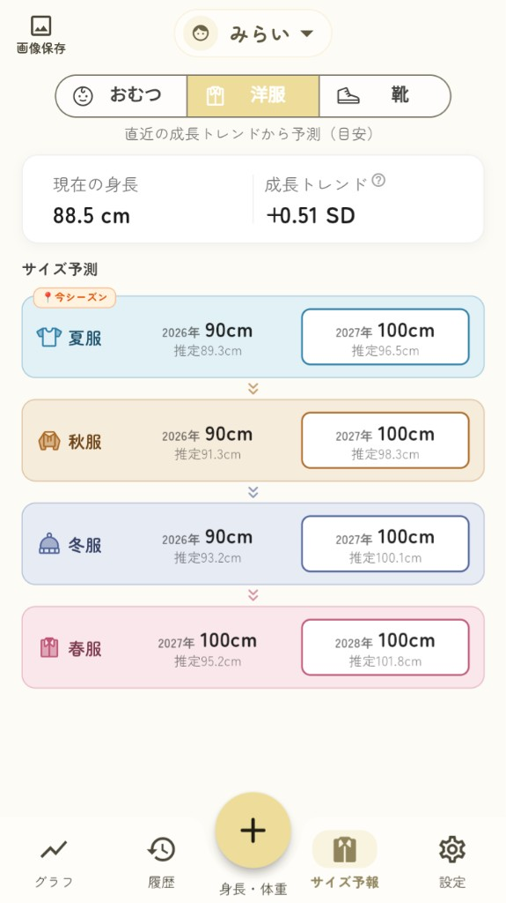

- 今すぐ着る服現在の身体サイズと商品実寸を中心に考える
- 少し大きめを選ぶ袖や裾が動きを妨げないか確認する
- 半年後・来年用着るまでの期間と成長の推移も考える
「大きめならお得」「ジャストサイズだけが正解」という単純な二択ではありません。その服をいつ、どんな場面で着るかから選びます。
子ども服はワンサイズ上を買うべき？
一律にワンサイズ上がおすすめとは言えません。今すぐ着る服なら、現在の身体サイズに合う候補から探します。少し大きめを選ぶときは、次の4項目を確認しましょう。
| 確認すること | 見るポイント |
|---|---|
| いつ着るのか | 今すぐ、数か月後、来年のどれか |
| 何の服か | 半袖、長袖、アウター、パンツなど |
| 今の服の余裕 | ぴったり、少し余裕、すでに小さめのどれか |
| 商品実寸 | 着丈、袖丈、ウエスト、股下など |
年齢別サイズは候補を探す入口です。最後は、現在の身体寸法と商品ごとの仕上がり寸法で確かめましょう。
まず、今のサイズ目安を確認したい方へ80〜130cmの身長目安と、年齢の見方を一覧にしています。
サイズ早見表を見る →ワンサイズ上を選ぶメリット・注意点
メリットになり得ること
- 少し長く着られる場合がある
- 少し先の季節にも使える場合がある
- 商品によっては重ね着しやすい
確認したいこと
- 袖や裾が余りすぎないか
- パンツがずれたり裾を踏んだりしないか
- 肩が落ちすぎず動きやすいか
- 着る頃に季節や用途が合うか
袖や裾が長すぎると、手洗いや遊び、歩行などの動きを妨げることがあります。立った姿だけでなく、歩く・しゃがむ・腕を上げる動きも確認してください。
園や外遊びでは、フード・ひもなどの商品仕様や、施設の服装ルールも確認しましょう。
安全面の出典を見る
大きめの袖・裾についてはベルメゾン「保育園着におすすめの服装は？」を参照しました。ひも・フード等の引っ掛かりについては政府広報オンラインと経済産業省「子ども服の安全確保について」を参照しています。
公的情報は「大きめの服全般が危険」とするものではありません。本記事では、動きやすさと商品仕様を確認するための実用情報として扱っています。
服の種類によって「大きめでいいか」は違う
同じワンサイズ上でも、半袖と長ズボンでは使いやすさが違います。服の種類ごとに、サイズ数字より先に見る場所を整理します。
半袖トップス
多少ゆとりがあっても着やすい商品はあります。首回りが開きすぎず、肩や着丈が動きを妨げないか確認します。
確認：首回り・身幅・肩・着丈長袖トップス・トレーナー
袖丈と袖口が重要です。手首で止まる作りか、折り返しても動きにくくならないかを見ます。
確認：袖丈・袖口・肩・着丈アウター
重ね着分のゆとりを考えつつ、肩が落ちすぎず、袖で手が隠れすぎないか確認します。
確認：肩幅・袖丈・着丈・身幅パンツ・長ズボン
裾が床につかず、ウエストがずれないかを確認します。調節ゴムの有無も判断材料です。
確認：ウエスト・股下・裾・動きやすさワンピース・スカート
立ったときの丈だけでなく、歩く・階段を上る・遊ぶときに邪魔にならないかを見ます。
確認：丈・身幅・足さばき園・保育園・幼稚園や外遊びで着る服
走る、しゃがむ、登る動きを妨げないかを優先し、園独自の服装ルールにも合わせます。
確認：動作・袖・裾・園のルール「ワンサイズ上」って何cm大きい？
次のサイズ表示は、ブランドや商品によって異なります。90の次に95がある場合と、95を扱わず100へ進む場合があります。
95サイズを挟んで展開する例
95を扱わず、90の次が100になる例
公式サイズ表には、90と100の間に95がある例もあります。購入時は、ブランド名だけでなく商品の最新サイズ展開を確認してください。
身体寸法と商品実寸は別のもの
同じ100・110という表示でも、商品実寸はブランドやデザインによって異なります。身体寸法は着る人の身長などの目安、商品実寸は実際の衣服を測った仕上がり寸法です。
今ちょうどよい服の着丈・袖丈・ウエスト・股下を測り、購入候補の実寸と比べると、数字だけで選ぶよりフィットを想像しやすくなります。
100と110など2サイズで迷ったらどうする？
現在の身長、今の服の余裕、商品の実寸、着る時期を確認します。境目ごとの詳しい見方は、個別記事にまとめています。
今着る服と「来年用」では考え方が違う
今すぐ着る服
- 現在の身長・体格
- 商品ごとの実寸
- 動きやすさと用途
今の使いやすさを優先します。
半年後・来年用
- 実際に着るまでの期間
- 今の服の余裕
- これまでの成長の推移
- 商品の実寸
着る時期の身体サイズを考えます。
セールで2サイズ上を買うなら？
サイズだけでなく、実際に着る季節、用途、好み、商品実寸まで確認します。安さだけでサイズを飛ばすと、着られる頃に季節や用途が合わないことがあります。
来年用・セールの先買いを詳しく確認着るまでの期間、成長記録、商品の実寸から考える手順をまとめています。
来年のサイズの選び方を見る →着る時期のサイズを考えたいときは
「サイズ予報」は、子どもの身長・体重の記録から、春・夏・秋・冬ごとの服サイズの目安を確認できる子育てアプリです。今ぴったりのサイズから、次の季節ごろにサイズアップしそうかを考えるときの参考にできます。
着る季節のサイズを
成長記録から考える
わが子の成長記録から、季節ごとの洋服サイズの目安を確認できます。
- 身長・体重を記録
- 成長曲線で推移を確認
- 季節ごとの洋服サイズ予報
アプリは公開準備中です。予報は購入サイズを保証するものではなく、あくまで目安です。

購入時は、ブランドや商品の最新サイズ表と商品実寸を優先してください。
子ども服の大きめサイズについてよくある質問
Q. 子ども服はワンサイズ上を買うのが普通？
一律ではありません。着る時期、服の種類、今の服の余裕、商品実寸を見て決めます。
Q. 大きめを買うならどの服が選びやすい？
半袖やアウターは候補にしやすい場合があります。ただし首回り、肩、袖丈、着丈、重ね着分を商品ごとに確認してください。
Q. パンツはワンサイズ上でも大丈夫？
ウエストがずれず、股下が長すぎず、裾を踏まない範囲で選びます。調節ゴムの有無も確認してください。
Q. 保育園・幼稚園用は大きめでもいい？
走る・しゃがむ・登る動きを妨げない範囲で選び、フードやひもなど園の服装ルールにも合わせます。
Q. 100と110で迷ったら？
現在の身長、今の100の余裕、商品の実寸、いつ着るかを確認します。大きい110が必ず正解とは限りません。
Q. 来年用ならワンサイズ上でいい？
一律には決められません。着るまでの期間、今の服の余裕、成長の推移、商品実寸を確認します。
Q. 2サイズ上を先買いしてもいい？
選択肢にはなりますが、着る季節、用途、好み、商品実寸まで確認し、今すぐ着る服の代わりにはしない方が選びやすいです。
まとめ｜「大きめ」ではなく、着る時期と服の種類で選ぶ
- 子ども服は、いつでもワンサイズ上が正解ではない
- 今着る服は、現在の身体サイズと商品実寸を優先する
- 半袖・アウター・パンツなど、服の種類で大きめの使いやすさは違う
- 2サイズで迷ったら、今の服の余裕と商品実寸を見る
- 来年用は、着るまでの期間と成長記録も考える
まず「何サイズ上か」ではなく、いつ・何を・どんな場面で着るかを決めましょう。今の身体サイズと服の余裕で候補を絞り、最後に商品実寸で確かめます。
参考資料・出典
- 政府広報オンライン「子ども服のひもによる事故に注意！」
- 経済産業省「子ども服の安全確保について」
- 政府広報オンライン「子ども服の安全規格」
- ベルメゾン「保育園着におすすめの服装は？」
- 一般財団法人カケンテストセンター「乳幼児用サイズ（抜粋）」（JIS L 4001:2023）
- 西松屋オンラインストア「ベビー・キッズ サイズ一覧表」
- ユニクロ「取り扱いサイズ」
- ユニクロ「商品サイズの測り方」
- GU「商品サイズ（仕上がり寸法）について」
出典は2026年8月19日に確認しました。メーカーや販売店のサイズ展開、商品実寸、園の服装ルールは変更される場合があります。購入時は各商品と利用施設の最新案内を優先してください。